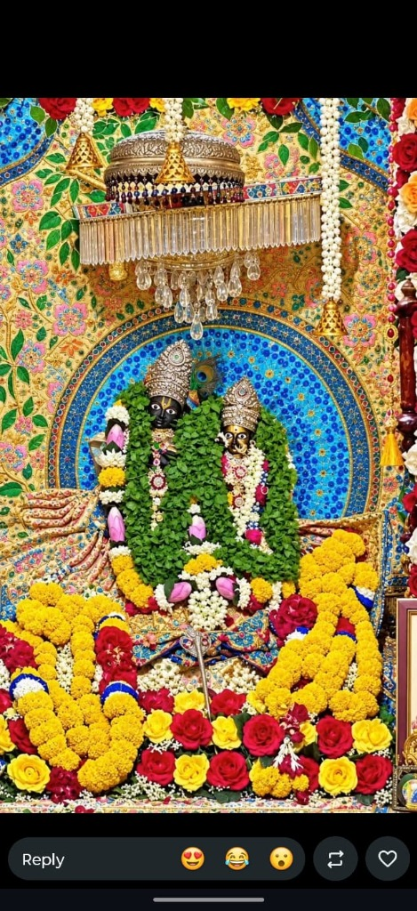
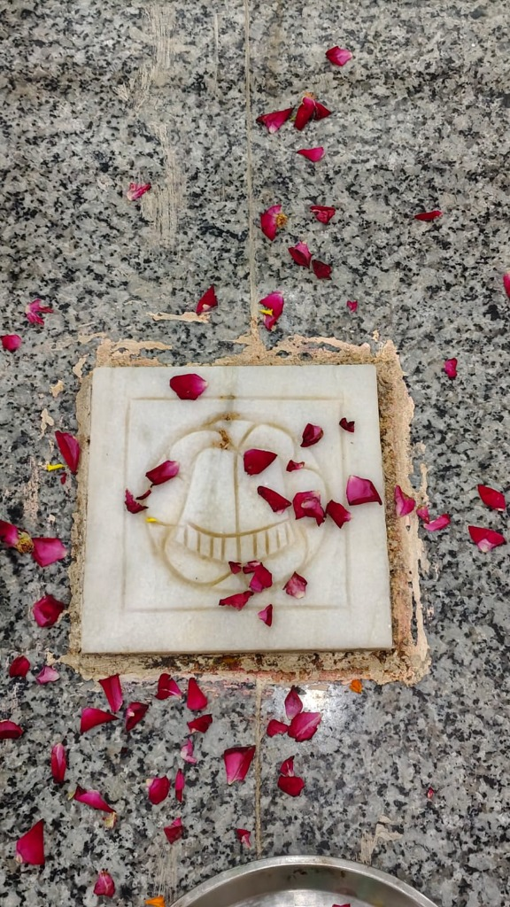

पवित्र विरासत
श्री बांके बिहारी जी का यह पावन धाम गांव सैनवा के गुलाल थोक में स्थित है। यहां के पूज्य महंत श्री चन्नी बाबा जी थे। मान्यता अनुसार यह गांव सैनवा का सबसे प्राचीन मंदिर है, जो गांव बसने से भी पूर्व यहां स्थित था। यह वृंदावन में विराजमान श्री बांके बिहारी सरकार का साक्षात् स्वरूप माना जाता है।
* 3D तकनीक द्वारा तैयार किया गया आभासी मंदिर गर्भगृह।
पावन समय
पावन तीर्थ स्थल — ग्राम सैनवा
ग्राम सैनवा की पावन भूमि पर स्थित दिव्य एवं सिद्ध मंदिर, जहां नित्य प्रभु भक्ति, तप और सेवा की पावन धारा बहती है।

पवित्र कुंड धामश्री श्याम बिहारी मंदिर ग्राम सैनवा के सवल-थोक में श्री श्याम कुंड के पावन तट पर स्थित है। महंत श्री गोपाल बाबा हैं। भादों अमावस को विशाल मेला, दंगल, 56 भोग और 11 दिवसीय रासलीला का दिव्य आयोजन होता है।
प्राचीन धाम
ग्राम सैनवा के पीता-थोक में श्री श्याम कुंड के किनारे स्थित। यहां श्री कृष्ण-राधा, राम दरबार एवं माता रानी विराजमान हैं। पुजारी श्री श्याम नंद बाबा हैं और प्रतिदिन सुबह-शाम भजन-कीर्तन होता है।

सिद्ध तपोभूमिग्राम सैनवा की परम सिद्ध तपोभूमि जहां पूज्य तपा बाबा के दिव्य चरण चिह्न और उनकी तपस्या की दिव्य ऊर्जा आज भी विराजमान है। यहां सच्चे भाव से शीश नवाने वाले भक्तों के सभी कष्ट दूर होते हैं।
गोगा जी धाम
ग्राम सैनवा के सवल-थोक में श्री श्याम कुंड तट पर स्थित। 11 दिसंबर 2015 को निर्माण और 12 अगस्त 2016 को मूर्ति स्थापना हुई। महंत श्री ब्रज मोहन नाथ जी हैं और भादों नवमी को विशाल जागरण-भंडारा होता है।
शक्ति पीठ
गांव सैनवा के अंदास थोक में स्थित 45 वर्ष प्राचीन मंदिर, जिसका निर्माण दौसौला बाबा ने करवाया था। प्रांगण में स्थित पवित्र कुएं के जल से स्नान करने से चर्म रोगों से चमत्कारी मुक्ति मिलती है।
भक्तों के अनुभव
sabhi har mahine 10 tarik ko qr pr 200 rupee kre jisse ki mandir ka fund badh jaye
मंदिर की 3D आभासी सेवा बहुत ही सुंदर है। घर बैठे श्री बांके बिहारी जी के दर्शन का असीम आनंद मिला।
बहुत ही शांत और पावन धाम। सैनवा गांव में बिहारी जी के दर्शन कर मन को असीम शांति प्राप्त होती है।
सेवा में सहभागी बनें
मंदिर के रख-रखाव, दैनिक पूजा-अर्चना एवं भक्तों की सेवा हेतु आपका सहयोग अमूल्य है। नीचे दिए गए QR कोड को स्कैन कर सीधे दान कर सकते हैं।
UPI आईडी: yourtemple@upi
 सभी UPI ऍप्स से स्कैन करें
सभी UPI ऍप्स से स्कैन करें
कृपया दान करने के पश्चात 7060806121 नंबर पर दान की रसीद/स्क्रीनशॉट अवश्य भेजें।
मार्ग निर्देश
श्री बांके बिहारी जी मंदिर, गुलाल थोक, सैनवा, छाता, मथुरा (उत्तर प्रदेश)।